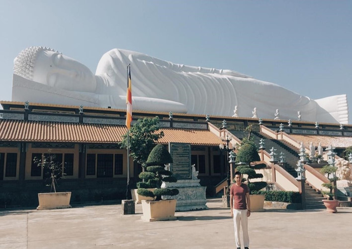

Destinations
Hoi Khanh Pagoda is an historic Buddhist temple built in Binh Duong in 1741. In 2013, the pagoda received a certificate recognising the statue of Buddha entering Nirvana on the roof as the longest example in Asia. The record was recognised by the India-based Asia Book of Records.
The temple was initially built on a prominent hill, but in 1861 it was destroyed in fighting as the French colonial army underwent the process of colonising southern Vietnam. The temple was rebuilt by Thích Chánh Đắc at the foot of the hill, around 100 m south of the original site. The temple currently is located at 35 Yersin Street, in Phú Cường ward, in the town of Thu Dau Mot, north of Ho Chi Minh City.
The temple is located only 150 m away from the road. Beyond the triple gates inscribed with depictions of dragons and phoenixes, the temple lies on a quiet plot of land, with many trees, in particular, four eucalyptus trees more than a century old that were planted shortly after the temple was rebuilt.
The preaching hall and the eastern sanctuary were rebuilt in 1917, and the western sanctuary was rebuilt in 1984. The main ceremonial hall was rebuilt in 1990–1991. On February 29, 1992, the Board of the Buddhist Association of Song Be Province organised the restoration of the historical statues of the temple. The total built-up area occupied by the main hall, preaching hall, western and eastern sanctuary of the temple is 700 square metres. In the main hall are statues of Gautama Buddha, Ksitigarbha and other bodhisattvas, all made of wood with a golden paint exterior. There are statues of 18 arahants around the main hall. The wooden statues were carved in the late 19th century by local craftsmen from Thu Dau Mot.
Over the more than 250 years of its existence, ten abbots have presided over the temple. The cremated remains of the nine past abbots have been enshrined in stupas on the temple grounds. These are Thich Dai Ngan, Thich Chan Kinh, Thich Chanh Dac, Thich Tri Tap, Thich Thien Quoi, Thich Tu Van, Thich An Buu - Thien Quoi, Thich Thien Huong and Thich Quang Vien. The current abbot is Thich Hue Thong, who is also the current Secretary-General of the provincial Buddhist association.
Hoi Khanh temple has long been a centre of Buddhist scholarship in the region. Many of the monks trained at the temple have gone on to open and preside over other temples in the area.
One notable monk to have come from Hội Khánh was Thích Từ Văn who was regarded as the leading monk of his time from southern Vietnam. In 1920, he was invited to Marseilles, France to give talks on the dharma. His efforts were instrumental in the setting up of Hoi Khanh Temple in Marseilles.
From 1923 to 1926, a group of anti-colonial activists who advocated Vietnamese independence from France, met at the temple. One of the activists was Nguyễn Sinh Sắc, the father of Ho Chi Minh.
The temple is currently the headquarters of the provincial Buddhist association and has been listed by the Vietnamese government as having heritage value on the grounds of being significant in national culture.